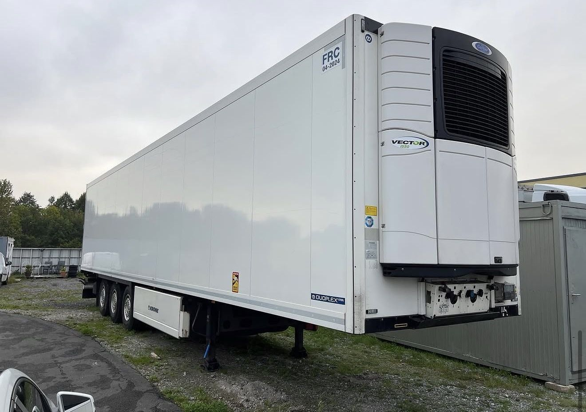
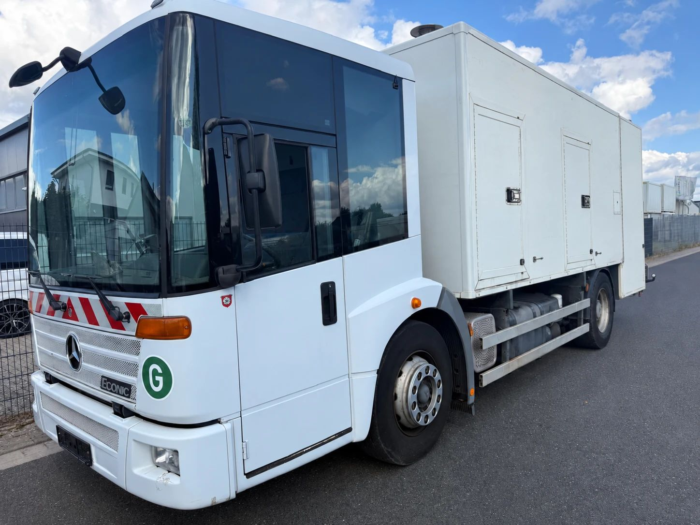

Sie stehen morgens an der Ampel. Vor Ihnen hält ein Linienbus, rechts wartet ein Kipper mit Schotter, und in zweiter Reihe lädt ein Lieferwagen Pakete aus. Bewusst wahrgenommen haben Sie davon wahrscheinlich nichts. Genau darum geht es in diesem Beitrag: Nutzfahrzeuge sind so selbstverständlich geworden, dass wir sie kaum noch sehen. Dabei hängt fast alles, was unseren Tag ausmacht, an LKW, Bussen und Arbeitsmaschinen.
Wir begleiten einen ganz normalen Werktag und schauen, wo Nutzfahrzeuge darin stecken. Am Ende stehen ein paar Zahlen, die zeigen, wie groß das Ganze ist.
6:30 Uhr: Das Frühstück war schon unterwegs
Brötchen, Milch, Butter, Obst: Bevor irgendetwas davon auf Ihrem Tisch lag, ist es mit dem LKW gefahren, oft mehrmals. Vom Hersteller ins Zentrallager, vom Lager in die Filiale. Gekühlte Ware reist im Kühlauflieger, der die Temperatur die ganze Nacht über konstant hält, damit der Joghurt morgens um sechs noch genauso frisch im Regal steht wie beim Verladen.
Bahn und Binnenschiff übernehmen viel bei großen Mengen über lange Strecken. Der Weg in den Supermarkt um die Ecke führt aber fast immer über die Straße. Laut Statistischem Bundesamt wurden 2024 in Deutschland rund 3,34 Milliarden Tonnen Güter mit dem LKW befördert. Das sind knapp 79 Prozent aller transportierten Güter.

7:15 Uhr: Mit dem Bus zur Arbeit oder zur Schule
Für Millionen Menschen beginnt der Tag an der Haltestelle. Im Nahverkehr mit Bussen zählte das Statistische Bundesamt 2025 rund 5,3 Milliarden Fahrgäste. Das ist mehr als bei Straßenbahnen (rund 3,9 Milliarden) und mehr als im Nahverkehr der Eisenbahn (2,8 Milliarden). Rechnerisch sind das gut 14 Millionen Busfahrten an jedem Tag des Jahres.
Besonders auf dem Land ist der Bus oft das einzige öffentliche Verkehrsmittel überhaupt. Schulbus, Berufsverkehr, die Fahrt zum Arzt: Fällt eine Linie aus, merkt das ein ganzer Ort.

8:00 Uhr: Die Baustelle, über die alle schimpfen
Auf dem Weg ins Büro wieder Stau, eine Spur ist gesperrt. Ärgerlich, aber hinter der Absperrung entsteht das, was wir morgen nutzen: eine neue Fahrbahndecke, eine sanierte Brücke, die Leitung für schnelles Internet. Möglich ist das nur mit schwerem Gerät. Kipper bringen Schotter und Asphalt, Radlader und Bagger bewegen das Material, Tieflader bringen die Maschinen zur nächsten Baustelle.
Ohne diese Fahrzeuge gäbe es keinen Straßenbau, keinen Wohnungsbau und keine Erneuerung der Infrastruktur, über die in Deutschland so viel gesprochen wird.

Tagsüber: Handwerk, Pakete, Pflege
Der Elektriker, der bei Ihnen die Steckdose repariert, kommt mit dem Transporter. Darin liegt sein halbes Lager. Der Paketbote, der Ihre Online-Bestellung bringt, fährt seine Tour ebenfalls mit einem Nutzfahrzeug, genau wie der Pflegedienst, der Getränkehändler und die Apothekenbelieferung. Diese kleinen Nutzfahrzeuge fallen am wenigsten auf, weil sie so normal aussehen. Für viele Betriebe sind sie aber das wichtigste Werkzeug, das sie besitzen.
18:00 Uhr: Zum Training und am Wochenende mit dem Verein
Abends geht es zum Sport. Die Halle wurde mit LKW-Ladungen Beton gebaut, die Geräte darin kamen per Spedition. Am Wochenende fährt die Mannschaft mit dem Reisebus zum Auswärtsspiel, die Schulklasse auf Klassenfahrt, der Seniorenclub zum Tagesausflug. Ein Reisebus ersetzt dabei viele einzelne Autos, und alle kommen gemeinsam an.

Die unsichtbare Schicht: Müllabfuhr, Kanal und Winterdienst
Manche Nutzfahrzeuge arbeiten, wenn wir noch schlafen. Die Müllabfuhr leert jede Woche zuverlässig die Tonnen. Kanalreinigungsfahrzeuge halten das Abwassernetz frei, Kehrmaschinen die Straßen sauber. Im Winter rücken die Streu- und Räumfahrzeuge oft schon mitten in der Nacht aus, damit Straßen und Radwege frei sind, bevor der Berufsverkehr beginnt.
Erst wenn eines davon fehlt, merken wir, wie sehr wir uns darauf verlassen: die Tonne, die nicht geleert wurde, oder die Straße, die nach dem ersten Schnee noch glatt ist.

Die Zahlen dahinter
Wer genauer hinschaut, sieht, wie groß das Ganze ist:
- Rund 3,9 Millionen LKW sind in Deutschland zugelassen, dazu rund 230.000 Sattelzugmaschinen und rund 88.000 Busse (Kraftfahrt-Bundesamt, Stand 1. April 2026, veröffentlicht vom Bundesverkehrsministerium).
- Knapp 79 Prozent aller Güter wurden 2024 auf der Straße befördert, rund 3,34 Milliarden Tonnen (Destatis).
- Gut 70 Prozent der Transportleistung, gemessen in Tonnenkilometern, entfallen auf den LKW. Bahn, Binnenschiff, Pipeline und Luftfracht teilen sich den Rest.
- 5,3 Milliarden Fahrgäste waren 2025 im Nahverkehr mit Bussen unterwegs (Destatis).
Das Rückgrat der Wirtschaft fährt auf Rädern
Deutschland ist ein Industrie- und Exportland. Fabriken arbeiten mit engen Lieferfenstern: Teile kommen nicht Wochen vorher ins Lager, sondern zu dem Zeitpunkt, an dem sie gebraucht werden. Das funktioniert nur, weil LKW diese Teile verlässlich und pünktlich bringen. Dasselbe gilt für den Handel, für das Handwerk, für Krankenhäuser und für jede Baustelle.
Für die Betriebe, die sie einsetzen, sind Nutzfahrzeuge deshalb keine Autos, sondern Arbeitsmittel. Ein LKW, der steht, verdient kein Geld. Darum ist ein gepflegtes Nutzfahrzeug auch nach Jahren im Einsatz noch viel wert, und wenn es hier ausgemustert wird, arbeitet es oft woanders weiter.
Wo ECS ins Spiel kommt
Genau hier setzen wir an. Die ECS Exclusive Commerce Services GmbH aus Gehrden bei Hannover handelt mit gebrauchten Nutzfahrzeugen und bringt über 30 Jahre Erfahrung im Fahrzeughandel mit. Wir kaufen Nutzfahrzeuge an: LKW, Reisebusse und Linienbusse, Transporter sowie Bau- und Kommunalfahrzeuge, auch ganze Fuhrparks. Abgeholt wird deutschlandweit.
Viele dieser Fahrzeuge bekommen anschließend ein zweites Leben: Wir exportieren Nutzfahrzeuge in die EU, nach Osteuropa und in den Nahen Osten, wo sie weiter Waren, Menschen und Baumaterial bewegen. Und wer selbst ein Fahrzeug sucht, findet unsere gebrauchten Nutzfahrzeuge im aktuellen Bestand.
Sie möchten ein Nutzfahrzeug verkaufen oder suchen eines für Ihren Betrieb? Schreiben Sie uns oder rufen Sie an. Wir melden uns schnell mit einem konkreten Angebot.
Hinweis: Dieser Beitrag dient der allgemeinen Information und ersetzt keine Rechts- oder Steuerberatung. Alle Angaben ohne Gewähr, Stand: 1. November 2026. Genannte Marken und Modellbezeichnungen gehören ihren jeweiligen Inhabern. Die ECS GmbH ist ein unabhängiger Händler und steht in keiner Verbindung zu den Herstellern.